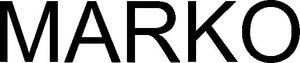

Trade Mark Journal No.2025/012 21 March 2025
WO0000001843961 (42,44)
Office of origin: New Zealand
Date of International Registration:10 December 2024
Date of designation in the UK:
10 December 2024

International priority date claimed: 27 June 2024
(New Zealand)
(1267659)
- Class 42
- Software as a service [SaaS] in the fields of health, wellness, nutrition, counselling and diagnostic medical testing; software as a service [SaaS] in relation to medical testing services of blood sera, storing medical information, storing health information, storing wellness information, storing nutrition information, storing dietary information, storing fitness information, diagnostic medical testing and nutrition, health assessment services, medical profiles, medical record analysis; software as a service [SaaS] in relation to the provision of health, wellness, nutrition, counselling and diagnostic medical testing related information; platform as a service [PaaS]; hosting of websites which provide users with access to blood test analysis services; hosting of software as a service [SaaS].
- Class 44
- Nutrition counselling; medical testing services of blood sera; medical information; dietary and nutritional guidance; providing information about dietary supplements and nutrition; consulting services in the fields of health and nutrition; nutritional therapy services; providing healthy lifestyle and nutrition services, namely, personal assessments, personalized routines, maintenance schedules, and counselling; consulting services in the fields of diagnostic medical testing and nutrition; providing information regarding health and nutrition via an on-line computer database; providing medical testing of fitness and medical consultations to individuals to help them make health, wellness and nutritional changes in their daily living to improve health; providing information about nutrition via a website; health counselling; health assessment services; providing health information; providing healthcare information; providing medical information for medical professionals and medical patients that is processed, exchanged and accessed in real-time via a website; providing physical health information via a website; providing information about health, wellness and nutrition via a website; providing medical profiles and medical record analysis and assessments via a website that are designed to provide custom tailored outputs about recommended resources and treatments associated with a defined set of symptoms and concerns.
MARKO GLOBAL LIMITED
Representative: JAMES & WELLS, Level 2, Building E,, Union Square,, 192 Anglesea Street, Hamilton, NEW ZEALAND